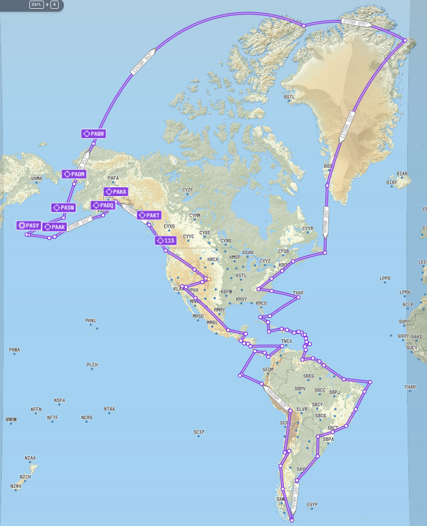

Map Layers
Completed
Remaining
Expedition I — Complete
Around the World in a Beechcraft Bonanza G36
Colorado Springs to the World and Back
Mission Complete
AircraftBeechcraft Bonanza G36
Total Legs68
Total Distance23,580 NM
Flight Hours155 hrs
DurationApr – Sep 2025
The Mission
A circumnavigation of the globe in a single-engine piston aircraft. Starting and finishing at the US Air Force Academy in Colorado Springs, the route crossed every meridian. The rules: real weather, no time acceleration, no fuel cheats. Any crash ends the journey.
Highlights
The Atlantic crossing via Greenland and Iceland. Flying over the Pyramids of Giza. London, Paris, Rome. The brutal Pacific coast ferry from Russia to Alaska. All of it in a single-engine piston aircraft over five months.
All Legs — Original Blog
Expedition II — Complete
Americas Extremes Challenge
Every Country. Every Extreme. One Plane.
Mission Complete
AircraftPilatus PC-12
Total Flights81
Total Distance31,745 NM
Flight Hours139 hrs
DurationOct 2025 – Feb 2026
The Mission
Land at the northernmost, southernmost, easternmost, westernmost, highest, and lowest airports in the continental US, North America, and South America — while landing in every country in both continents. No crossing your own path.
Highlights
CFS Alert at 82°N in Arctic twilight with no runway lights. Flying over the Panama Canal. Christ the Redeemer in Rio. The Andes crossing on the route of UAF Flight 571. A harrowing Las Vegas landing where full throttle fired instead of reverse thrust — nearly off the end of the runway into the desert. A gear-damaging crash landing in a French Guiana jungle.
All Flights — Original Blog
Expedition III — Current
Corps of Discovery
Following Lewis & Clark into the Unknown
First Flight Pending
AircraftTBD — Norden or XCub
Legs Flown0
Distance So Far0 NM
RoutePittsburgh → Pacific
The Mission
In 1803, Meriwether Lewis departed Pittsburgh with a freshly built keelboat and orders from President Jefferson to find a route to the Pacific. Two years and 8,000 miles later, the Corps of Discovery reached the ocean. This expedition follows their path — by air — landing as close to the actual route as possible at grass strips, river towns, mountain passes, and remote backcountry airstrips.
Historical Layer
The map shows all 464 outbound campsites with links to the original Lewis & Clark journal entries, plus 62 pivotal historical places with NPS descriptions and photographs. Each flight leg will be paired with the corresponding chapter of L&C history.
Route
Pittsburgh, PA → Ohio River → Missouri River → Great Falls, MT → Lemhi Pass → Lolo Trail → Columbia River → Fort Clatsop, OR